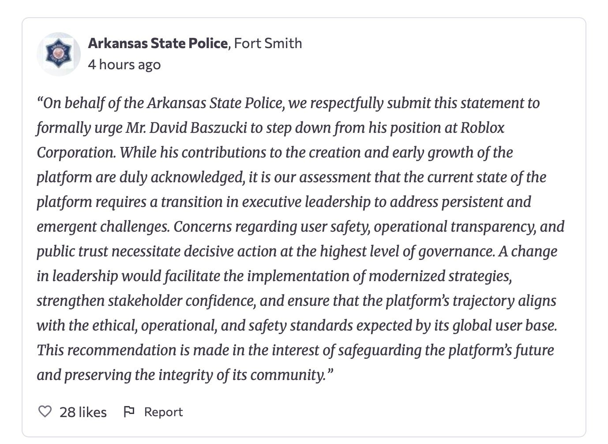

April (@aprilhvs)
new three days grace album in 3 days, wow what a tongue twister
new three days grace album in 3 days, wow what a tongue twister
antibirth is genuinely like the best soundtrack i've ever heard for a fangame, let alone for something based on The Binding Of Isaac. danny has his style, but most video game soundtracks (like the original TOBI) don't make me want to go out of my way to listen and loop the songs on it, and TBOI was no exception to that.
BUT THEN MUDETH COMES IN LIKE "hey, fuck you, i'm an alternative metal artist and i want to hook you on this music" and my gullible ass says "that's fine with me!!! give me Descent (Title) pleaseeeee
oh hey, i posted in the morning!!! yay!!!
....i just remembered i used to macro on hypixel
and now i'm probably going to get banned for that
me sitting there as wintr yap post about their worrying about their job career and social life (social issues especially being my own struggle hii!! i see you snooping, i'm calling you out, yeah that's right, i'm calling you out for nothing you did wrong! by the way you say too many stupid things and if you ever start worrying about saying stupid shit, i'm going to take a pallet to your home but then hit you over the head with it until you realize we all stay stupid things to the point that YOU LITERALLY CANNOT WORRY ABOUT I) and their first point being about how they haven't been in a friend group for a long time
meanwhile, my shit eating grin knowing she has basically replaced the slot of two former friends i dumped over a petty war:
not to be the petty asshole that talks drama to death, but wintr and i pretty much started talking actively since about june 2025, and when my minecraft server shut down along with my friend group in early july, i invited them back into the minecraft thing (and also added them to the friend group she's talking about as an afterthought, which was my friend group with two members removed and winter added to it) without a second thought and practically since then, wintr has literally just become a core member. they don't use their own channels and they have a timezone that aligns with the british (which basically after 6 PM, the brits usually go to sleep and it's just me and the eastern americans)
she just joined because my friend group was going through a bit of a drout and i honestly did not want to have 3-4 members at most, so she came along as like the fourth core member (along with me, my sibling and another friend) and i'm actually really happy to know that LITERALLY everyone in the friend group is happy, including the one person who has to go to bed nearing the end of ours.
tl,dr; i'm god? i made my friend group a solid all-around group and everybody is happy, including the one person i was worried abt
ps the other person i was worried abt was also really happy so that's two people i was worried about completely satisfied
the yapfest god help me
when i thought the initials in set it off's N.M.E. was meant to sound like "enemy" i was like a teenager
now i'm an adult and i just realized i think it stands for "no more excuses" lmao
I AM SO FUCKING COOKED. i am half asleep, a little buzzed off some thc and didn't get much sleep because the edible i took kept me up instead of setting me to sleep. oh my god. i am a walking zombie what the fuck
don't get into piling wood. just don't.
timeless and classics zero might be the coolest gun mod on minecraft's mod scene to date
MY FAVORITE MINECRAFT MOD IS LOST???
Hi, got time? A 1.7 mod I played across 2020-2023 is currently lost. It seems to have disappeared over the past two years, completely silently. I'm looking for Decimation build 1.21.10f, which was the last version to be released, it was from about December 2020. The file name is just Decimation.jar. Anybody willing to share a dump of their modpack, or even just the mod build?
seeing and using multimc after all of these forks and advancements to the minecraft launcher ecosystem is fucking crazy, because multimc just looks dinosaur compared to the forks. prism uses a nice ui library, has mod management, custom skins, java management... and multimc is just fucking raw. it's hilarious
and also, i kinda prefer multimc's skin management to prism's. idk, i just like theirs more, and it has a FUCKING RESET BUTTON.
the free schlep thing is going to become roblox's 9/11. the first tower in april when they forced auth on asset loading. now roblox is hitting the second tower by basically saying flat to everybody's face "your safety is not our problem and you can go fuck yourself". like genuinely, how the fuck do you manage that
in other news, i'll be free again soon to make GENUINELY good posts
THIS YEAR IS GOING TO BE FUCKING CRAZY.
there is genuinely no fucking going back because the friend group has actually been destroyed to such a mind shattering level. i have been stabbed both front and back. both of my irls ended up being total fucking snakes in their own ways, and any respect i had for the ONE person i gave credit during my meltdown has completely lost all of it. and they have the audacity to say i'm an enemy because they didn't like what i said. MY BROTHER IN CHRIST. YOU RAGEBAITED ME. WHY DO YOU THINK I LASHED OUT AT YOU????
and on top of this, finding out they're both in proximity uncomfortably close to two potential predators (who both have suggestive roblox outfits... the same kind porn addicts use) lhas lost me any respect i last had for either of them. i am beyond pissed off because among being stabbed fourteen times, finding out my friends go out of their way to support people who are potentially problematic, claiming that i guilt tripped them...
I AM SO FUCKING PISSED. you cannot say "you've taken all joy out of the things i like", then turn around and fuel one of gaming's biggest cesspools of kid grooming. like you cannot be that hypocritical.
sorry for the super angry and explicit post, i'll probably end up taking this down out of guilt but genuinely just so fucking pissed off at the people who claimed they wanted to give me help. and then those same people just take a nice, bleeding piss over everything i stand for
my irl friendgroup is literally falling apart right now. my two irls are stuck on a circlejerk together while my sibling and i are with a brand new group with some new online friends and this friend group is blowing the fuck up in positivity. probably because i've kept all mentions of this drama to in private, outside of the friend group, with only maybe one or two people.
i'm fuelling the hate and drama at this point, but i'm egging this all on because i've been done a while. my friend group was pretty much on the tightrope between "things are going to fall apart" and "everything's smooth sailing" for a long while before it finally collapsed. and now i have an excuse to make a new friend group and avoid the old mistakes i made
it's kinda mean to be rude like this, but the thing is i've been done a good while and i've been really deeply hurt by all the stupid handling that could have been avoided. so my little side outlet to things falling apart is just to clown and fortnite dance over the whole situation. though it might be time to cut it all back like my past enemies and just completely remove on
but god damn this ice cream is good
my victory lap is literally happening live. literally having a blast rn

you know you really fucked up if even american police are also pressuring you to step down
and also some extra points on the 1.21.1 lts thing -- you never did that when 1.19.1 came out. you didn't neglect 1.19.2 the same way. is it because we didn't have game drops then? was it because you're lazy? gaslight was applicable on that version? 1.19.4 had some internal changes from 1.19.1, are we counting that? no?
and please also support this petition. put roblox under a ceo that actually gives a fuck about the kids, rather than this fucking clown!
THE ROMAN EMPIRE FELL WHILE I WAS STONED??? HELLO??
WHY DID I HAVE TO MISS THE FALL OF A CIVILIZATION WHILE I WAS TOO BUSY HIGH AND LAUGHING MY ASS OFF
wow, got more details -- yup, this downfall is deserved. they support somebody with predator outfits on roblox.
and also im a little stoned, so if i seem talky and a little stupid, that's why :P
i think it's real ironic that after my friend group split up, they made a group without me and one of my minecraft server's core members. then, literally a month later when my server's thriving, they turn around and do things without my sibling, who's in their group.
you know, it's almost like when you don't do things out of spite and be nice to people while not talking shit about you during activities, that something lasts with good memories!
i made a new minecraft server with a new on-the-spot friend group and we ended up having people more willing to commit to ours. maybe because i included the original members (minus the two that left and riotted) and that i didn't make my whole gig about insulting you, i actually had people on my side that wanted to commit something nice!
sorry, just had to have my victory lap. you won't get anywhere making your minecraft server about spiting the other owner, kids! be nice, use it as an escape from the drama and just find other ways to occupy your time rather than giving attention to idiots.
that's all, thanks
using 1.21.1 as a LTS version while actively ignoring anything past it is so dumb, because literally 99% of the SMP market is going to use a version past that. why would you gate casual people like me from using a mod that adds FUCKING LOADING SCREEN TIPS of all things. are we waiting for the rendering changes and game drops to cool down or do you genuinely just want to gatekeep updates from people
like is it funny to clamp to a specific versions? i get a mod like Create doing it, which literally clutches to stable versions and is not really meant to be a "compatible with all versions" mod, it's a content adder and stuff
but come on, you make a mod for loading screen tips...
it's good to have tooltips back
I've really been struggling as of late with holding friendships, mostly because of things I do, I think. Ever since a long time friendgroup (since ~2022) split up and broke apart in early July, things have been pretty bad. I've been more prone to lashing out at people (I lashed out the day of the split up, hours before the formation of the "friend group without me", because one of my friends who i respected for situation handling randomly took a 180 and took my server from me), I've been possibly isolating, and I think I've been a little more down. I used to get angry and give off insane person vibes.
I don't anymore, but instead of being angrier (which has been MUCH better without my old friends, surprisingly), I'm just lonelier. Maybe I just don't know how to tolerate people and be respectful? I don't know. Things have been hard. I used to be way more social in 2019, but now it's just been so much harder. I can be myself, but then I have to doubt and be skeptical of every little thing. Every little weird thing needs to be watched under security cam and microscope.
Anyway, I put up a little post here, if you got a minute to relate or listen, I'd love to have a bit of attention on it, this is kind of my way to let out some held in feelings. This won't be a frequent thing. Just need to make a one time exception.
i like how on servers where server owners let the users decide if they want to be unreportable or not, you can turn off No Chat Reports' settings to hide all indicators, and then you just see a grey bar that identifies literally all No Chat Reports users. like it's literally so hilarious that it's an almost perfect way to dog whistle fellow NCR users...
assuming that clients haven't already integrated this
i found my own spacehey post 13 pages in the top posts, what the fuck?
yay, an air conditioner i can only turn on for two hours a day... because power is expensive
MY HAIR HAS GOTTEN SO LONG THAT IVE LITERALLY NEVER SEEN MY FACE WITH HAIR THIS LONG BEFORE.
OH MY GOD?
i must be really stupid if i can install forge instead of fabric on a fabric only instance
oh, i can't use my alpha4j silly thing on this.
Found this new launcher called "Quantum Launcher", which is still work in progress. New build is going to have ely.by support, and in the future there'll be support for servers, OptiForge / OptiFabric (like Legacy Launcher!), Prism/MultiMC instance importing, etc. Can't wait to see where they go with it, especially considering it's Rust based and took a shot at Prism for not being as "feature complete" as Quantum is, I'm curious to see if they actually go on that promise.
Oh, and please add MMC Instance exporting in the next version :(
10k site views..? god. and i don't even have a celebration ready!
ask how to sync taskwarrior between devices
accidently become unclear and get their taskwarrior display script instead
the minecraft player locator bar is actually kinda shit, idk why they added this in the game
do i sound crazy on this post?
i think i forgot what i was gonna write on this post. oh well
and also please don't ban me :( i promise i will not abuse your commands for anything more than snooping on your plugins
this might be a bad luck when a minecraft server inevitably has their staff go through my website and they see this and think i should be banned for tinkering a bit too far... oh well, i'm going to spoil my secrets anyway. just of note that i don't automate this because that's obviously against server rules, and i know the commands enough to type them manually anyway. plus actually typing makes the delays look less automated, so you can see the abnormal gaps and assume "yeah, a human's doing this"
for those running servers on anything paper adjacent (spigot, purpur, folia, everything that can take a Bukkit or Paper plugin), i notice nobody sets up their permissions the same! some people block /help, some don't block anything at all, some replace /help with something custom... and others have owners who think blocking every command under the sun except /msg is helpful.
one of my joyous things to do (as a guilty pleasure, though not to do anything malicious) is to run /help then /plugins to see if those commands are blocked. that's it, i just like seeing servers blocking /help then immediately forgetting that /plugins exist. plus, if you let me look at your plugins, i'll assume you have nothing to hide and even if i find something i don't like, you likely advertised that anyway and i just didn't read your ad enough!
and of course, servers that block both are mad suspicious, and i'm less likely to take you seriously. and also, as i speak i'm putting together a list of commands that are featured in typical shit p2w slop servers, so uhm... hi! you can't hide all the commands from me forever!
sorry for the silly post, haha... i just need to admit that i like to do this for shits and giggles. and also, it gives me peace of mind seeing in /plugins that there's just stuff i don't mind on it!
NAMI PLEASE FIX THIS THEME
THE BORDER COLOR ON THE ORIGINAL SIMPLIFIED CSS MAKES THE SIDEBAR AND BORDER COLOR THE SAME. I HAD TO MAKE A NEW VAR FOR JUST THE DASHED BORDER COLORS!!!
i probably sound like a lunatic
thanks random minecraft server for being upward about your bullshit and showing on the shop what kind of server you are! appreciate it
i want the treat plush so much...
sorry, just trying to lighten the mood after my pretty heavy rant below
not to be the paranoriac asshole that tries to go out of their way to bitch about what they don't like, but i think that david baszucki should be privately investigated solely for the damage he's done to his platform.
his platform was originally founded for kids, and he turned around and turned it into an online dating space with serious problems related to sexual content. then he turns around and enables them by letting them make the bypassed emotes their heart desires.
i don't know about you, but i think something sounds mentally ill about that
god, i just fucking hate this so much because roblox is my platform and the only one where i feel i can put together characters and renders without feeling like it's too much, and now some stupid fuck in the chair is basically giving a bunch of predators the tools to wreck havoc on the platform. and now i'm out of a hobby again
so NOW i have to go out of my way to hunger strike again just to become desperate because everybody is on roblox but don't have an offplatform alternative. if zeekers can go off roblox and make lethal company, and Nelson Sexton and go off roblox (after making "Deadzone") and make unturned, then what is stopping everybody else..??
please roblox, get a new ceo that will actually care. get a ceo that does not ignore predators for fucks sake
ITS SO EASY TO JUST YAP AND YAP LIKE A TWITTER YAPPER HELP
modern whitelisted servers are so dumb to try and join because they treat everything like a job application. like i've literally started lying on my applications about why i want to join servers because it's so ridiculous.
"i want to join your server because i think i could be a great new member" no, it's because i want to play a GAME and hopefully somehow learn how making friends works. not because i'm a social butterfly with no flaws whatsoever or whatever i lied and said on my application. hell, i don't even REMEMBER my application.
sorry, just a little silly post
meant to make a post about music but i can't do that because neocities won't display the fucking audio file for no reason
I MADE A NEW POST ABOUT THE BUTTON AND I FORGOT I MADE ONE YESTERDAY GOD FUCK
WINTER YOU STOLE MY IDEA
somebody please make a video about a joke, it's about a guy and a sandwich, and then the punchline is just some dude going to a guy with a sandwich like "my brother in christ, you invented your sandwich, just eat it" that would be fucking hilarious
the way people would genuinely ask for toilets in minecraft, i really want to be able to stub my toe in minecraft! we can burn ourselves in fires, can get hit by other people to death, can suffocate ourself with sand, could fall from a height... but i can't stub my toe after walking on stairs and accidently hitting a full block with full force?
viafabricplus is still kicking me on 1.21.6 servers with particle issues. this should have been fixed already
i have to go back to avoiding servers like the plague again. oh my god. please, people
WELL HERE WE GO
(post contains topic of safe and legal substance use)
sorry, i mainly put this post here to get my read more code down. sorry, wintr, i may have looked at your end for inspiration...
anyway, i took a weed gummy because i can legally do that in my jursidiction, maybe i should start posting while high for fun
maybe should have put my warning page back up though...
new site button! copy the text on the left to add it to your site! i think it's kinda chopped though...
i have really been using this template wrong if i'm just finding out i needed three extra font files to go with it
also might i add, discord should REALLY add server notes. like i want to right click a server and view notes on a server i set. it would be so easy to differentiate between servers and such, discord please get on this!
i grinded through and got accepted through almost every one LOL
god i love having a pocket tumblr that runs on html, thank you so much nami! <3
sorting through a load of servers rn, watch as the count quickly dwindles from seven to 1-2
i get distracted too easily wtf
slapped taskwarrior on my wsl instance i mainly use to download music and holy shit this is cool... but idk about not having sync between two computers or opening ubuntu everytime i want to check my task list
also, god... fuck searching for minecraft servers. i swear, everytime i end up somewhere, either i cannot be social enough to actually welcome myself in, or i just end up getting a shit cut of the cake. ugh...
well, i don't really know what to put here, so i did what wintr did but copied everything into the homepage... because a plaintext homepage kinda looks like shit.